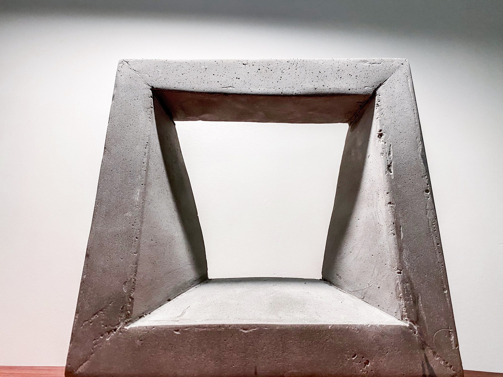
Projects / 13
Digitalized Versatile Mold
A digitally driven mold for the heterogeneous production of facade bricks
Developed with four other students in a digital technology course, the project is a digitally driven, versatile mold for heterogeneous facade bricks: one mold on the production line casts a whole family of bricks, so a facade can vary unit by unit.
Design
An acrylic frame holds four actuated elements around a central diaphragm; the algorithm moves them to a new position for every brick before the concrete is poured.
Details
One mold, many bricks: the same device produced a family of openings that vary in angle, depth and shape across the facade. Linked to an Arduino board, it could turn the facade into a responsive skin adjusting light, pattern or enclosure.
One mold, a family of bricks
Developed with four other students in a digital technology course, the project is a digitally driven, versatile mold for heterogeneous facade bricks: one mold on the production line casts a whole family of bricks, so a facade can vary unit by unit.
An algorithm drives a central diaphragm that shapes each opening; linked to an Arduino board, it could turn the facade into a responsive skin adjusting light, pattern or enclosure.
Keywords: digital technology in architecture / versatile mold / heterogeneous reproduction / facade bricks / on-site brick production
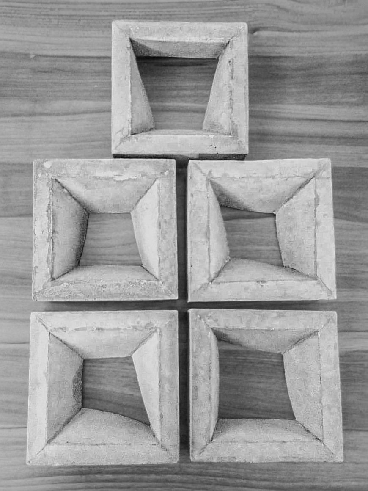
The mold
An acrylic frame holds four actuated elements around a central diaphragm; the algorithm moves them to a new position for every brick before the concrete is poured.
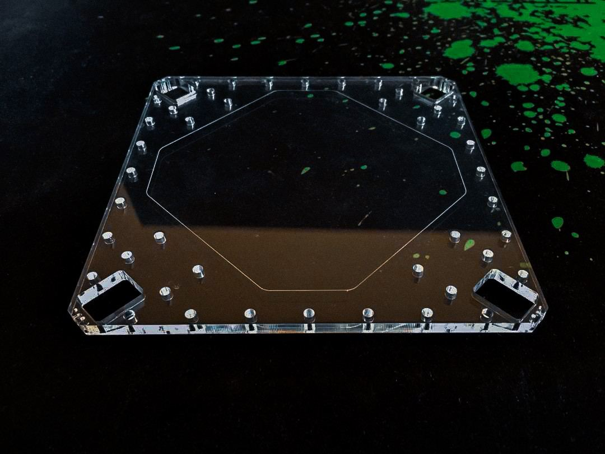
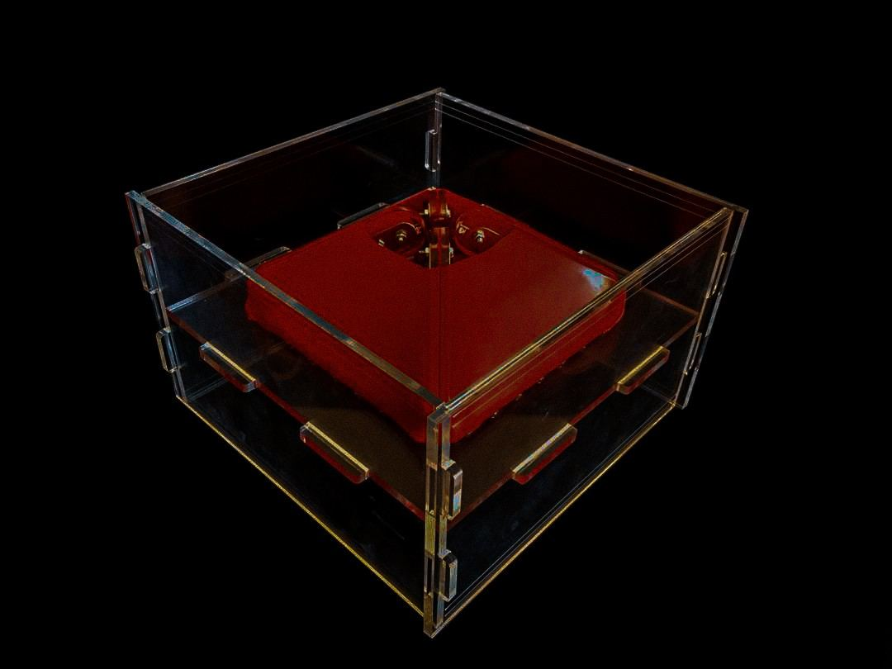
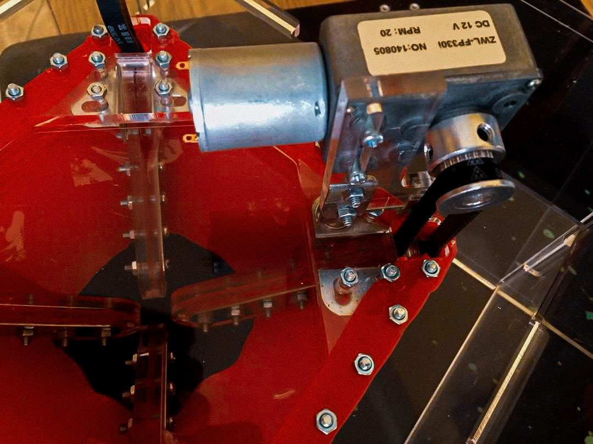
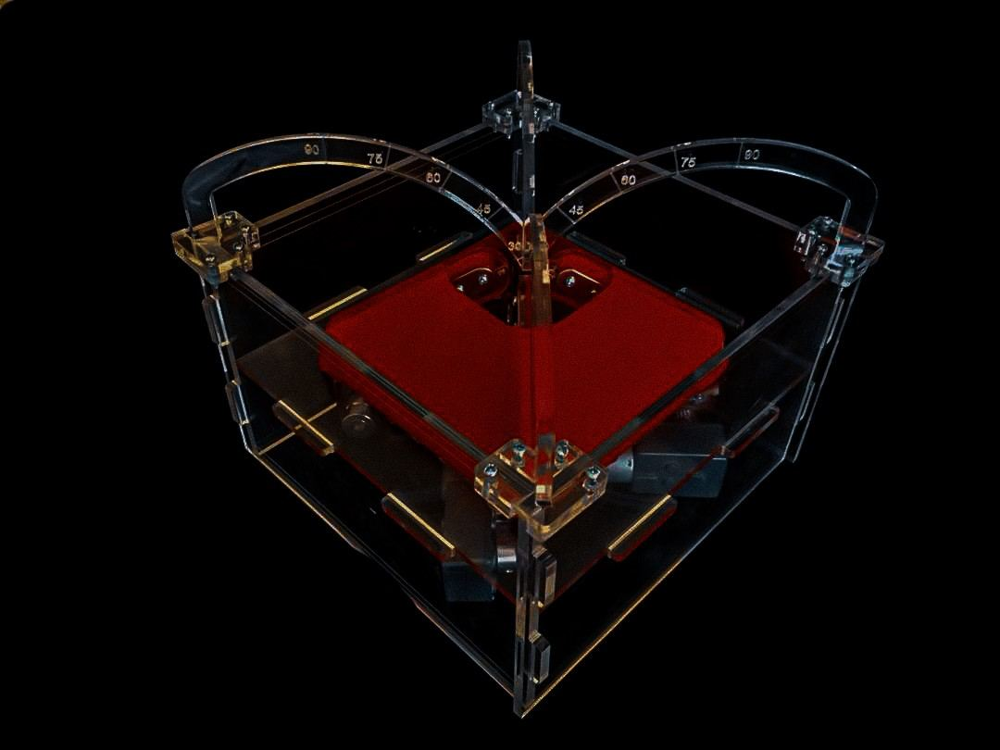
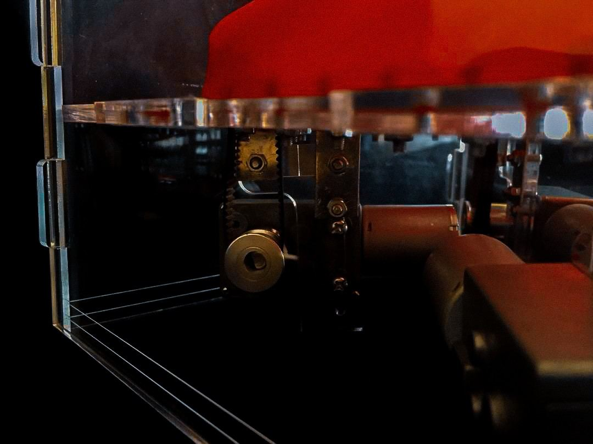
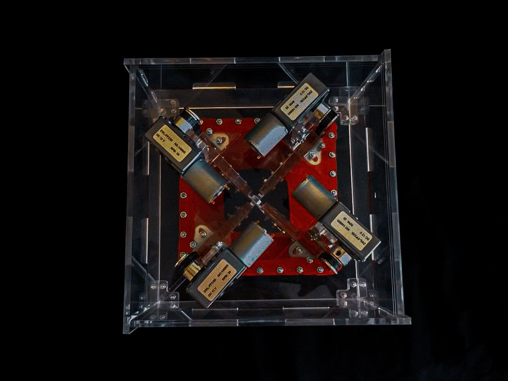
Casting
One mold, many bricks: the same device produced a family of openings that vary in angle, depth and shape across the facade.
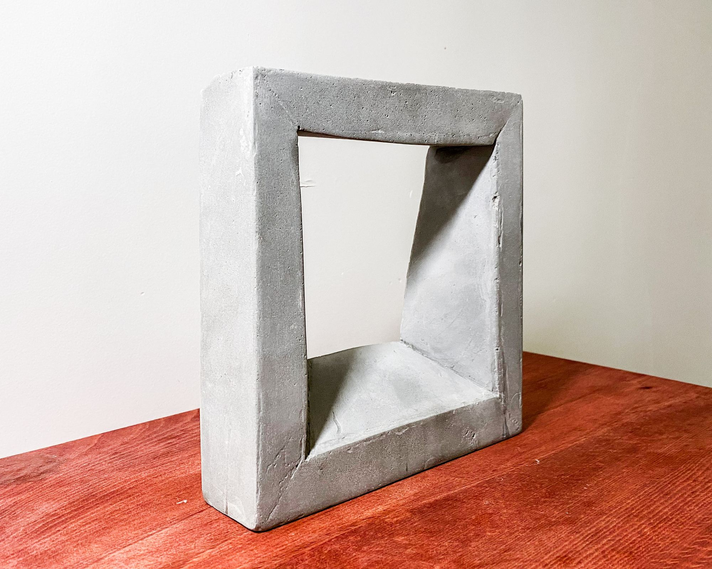
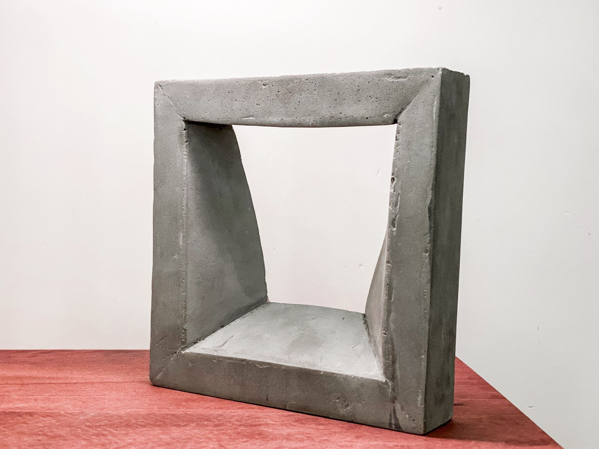
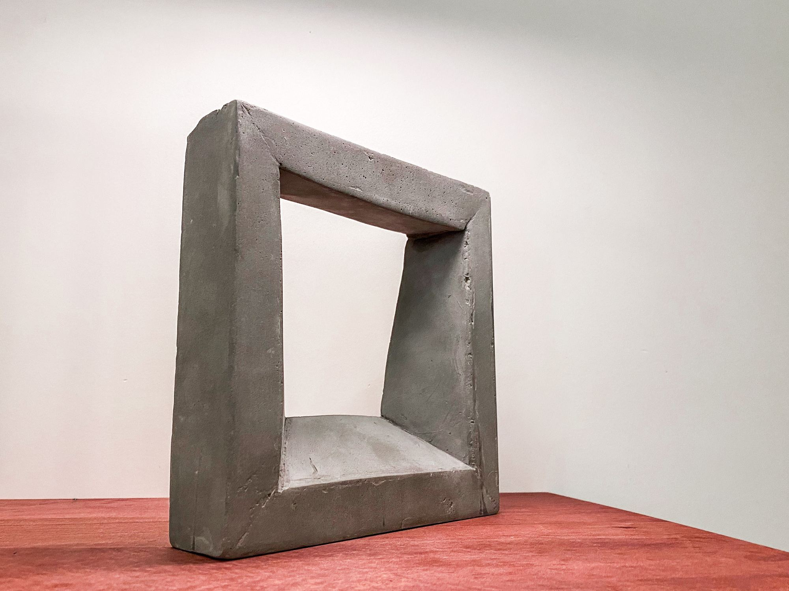
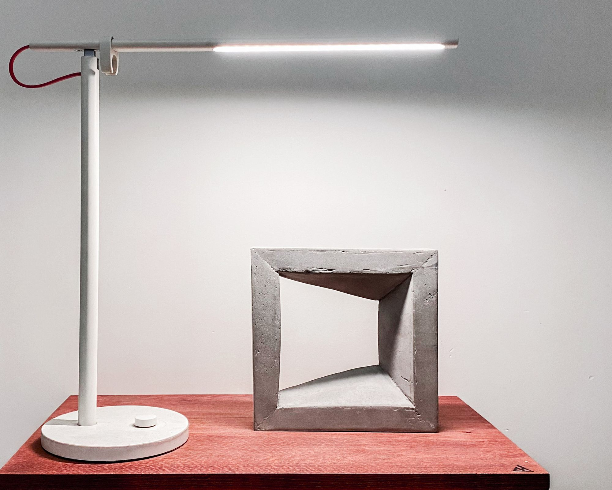
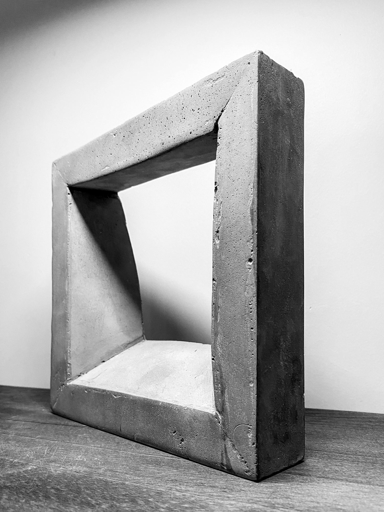
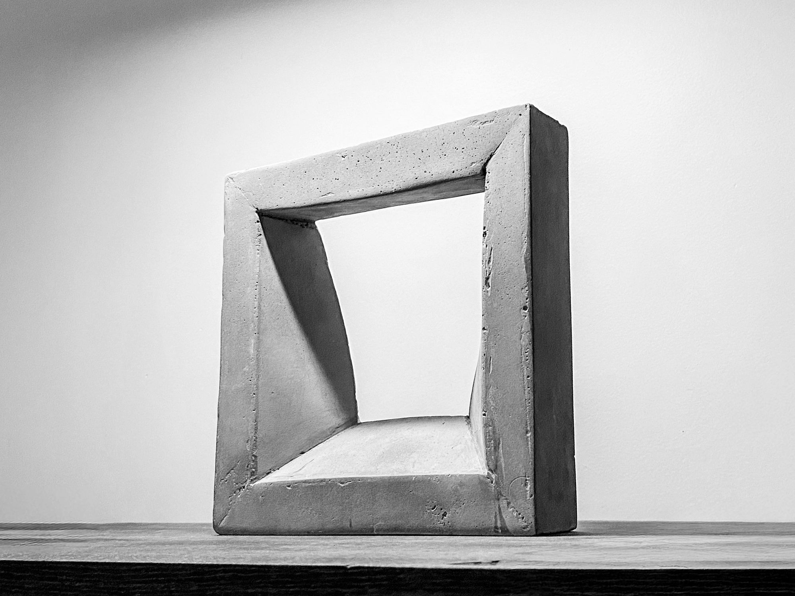
Process
An acrylic frame holds four actuated elements around a central diaphragm; the algorithm moves them to a new position for every brick before the concrete is poured. One mold, many bricks: the same device produces a family of openings that vary in angle, depth and shape across the facade. Each brick records one position of the diaphragm, so the facade becomes a readable trace of the algorithm.